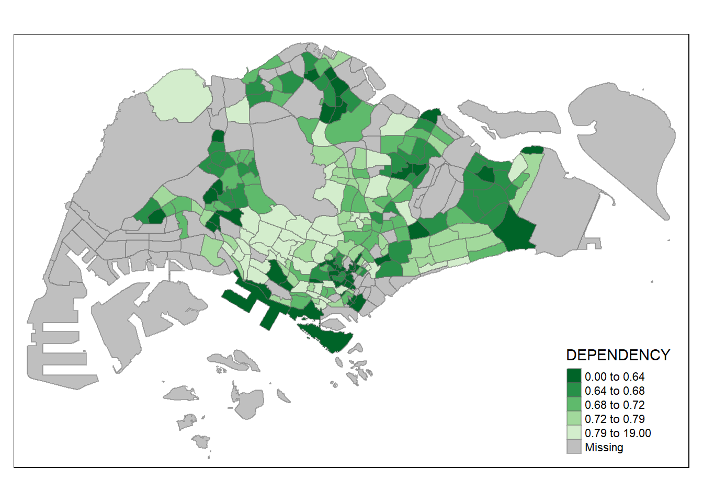

pacman::p_load(sf, tmap, tidyverse)Hand on ex 1 - Chap 2 Choropleth Mapping with R
Overview
Step 1: Import Packages
As usual, we first import all the packages:
Step 2: Import the data
mpsz <- st_read(dsn = "data/geospatial", layer = "MP14_SUBZONE_WEB_PL")Reading layer `MP14_SUBZONE_WEB_PL' from data source
`D:\f4sared\ISSS624\hands_on_ex\ex_1\data\geospatial' using driver `ESRI Shapefile'
Simple feature collection with 323 features and 15 fields
Geometry type: MULTIPOLYGON
Dimension: XY
Bounding box: xmin: 2667.538 ymin: 15748.72 xmax: 56396.44 ymax: 50256.33
Projected CRS: SVY21Examine the contents:
head(mpsz, n=1)Simple feature collection with 1 feature and 15 fields
Geometry type: MULTIPOLYGON
Dimension: XY
Bounding box: xmin: 30794.28 ymin: 28369.47 xmax: 32362.39 ymax: 30140.01
Projected CRS: SVY21
OBJECTID SUBZONE_NO SUBZONE_N SUBZONE_C CA_IND PLN_AREA_N PLN_AREA_C
1 1 1 MARINA SOUTH MSSZ01 Y MARINA SOUTH MS
REGION_N REGION_C INC_CRC FMEL_UPD_D X_ADDR Y_ADDR
1 CENTRAL REGION CR 5ED7EB253F99252E 2014-12-05 31595.84 29220.19
SHAPE_Leng SHAPE_Area geometry
1 5267.381 1630379 MULTIPOLYGON (((31495.56 30...Next, we import the csv attribute data into R:
popdata <- read_csv("data/aspatial/respopagesextod2011to2020.csv")Rows: 984656 Columns: 7
── Column specification ────────────────────────────────────────────────────────
Delimiter: ","
chr (5): PA, SZ, AG, Sex, TOD
dbl (2): Pop, Time
ℹ Use `spec()` to retrieve the full column specification for this data.
ℹ Specify the column types or set `show_col_types = FALSE` to quiet this message.Data Wrangling:
Below we will prepare the new dataframe.
popdata2020 <- popdata %>%
filter(Time == 2020) %>%
group_by(PA, SZ, AG) %>%
summarise(`POP` = sum(`Pop`)) %>%
ungroup()%>%
pivot_wider(names_from=AG,
values_from=POP) %>%
mutate(YOUNG = rowSums(.[3:6])
+rowSums(.[12])) %>%
mutate(`ECONOMY ACTIVE` = rowSums(.[7:11])+
rowSums(.[13:15]))%>%
mutate(`AGED`=rowSums(.[16:21])) %>%
mutate(`TOTAL`=rowSums(.[3:21])) %>%
mutate(`DEPENDENCY` = (`YOUNG` + `AGED`)
/`ECONOMY ACTIVE`) %>%
select(`PA`, `SZ`, `YOUNG`,
`ECONOMY ACTIVE`, `AGED`,
`TOTAL`, `DEPENDENCY`)`summarise()` has grouped output by 'PA', 'SZ'. You can override using the
`.groups` argument.Convert some data into upper case:
popdata2020 <- popdata2020 %>%
mutate_at(.vars = vars(PA, SZ),
.funs = funs(toupper)) %>%
filter(`ECONOMY ACTIVE` > 0)Warning: `funs()` was deprecated in dplyr 0.8.0.
ℹ Please use a list of either functions or lambdas:
# Simple named list: list(mean = mean, median = median)
# Auto named with `tibble::lst()`: tibble::lst(mean, median)
# Using lambdas list(~ mean(., trim = .2), ~ median(., na.rm = TRUE))Next we will join the tables together:
mpsz_pop2020 <- left_join(mpsz, popdata2020, by = c("SUBZONE_N" = "SZ"))Save the table:
write_rds(mpsz_pop2020, "data/rds/mpszpop2020.rds")Step 3: Plotting with various tools
Using qtm()
Make our first plot based on the column “Dependency”.
However, a disadvantage of qtm() is that i makes individual layers harder to control.
tmap_mode("plot")tmap mode set to plottingqtm(mpsz_pop2020, fill = "DEPENDENCY")
Using tm_shape()
With the disadvantage of the qtm(), we will next try tm_shape() to get better professional quality:
tm_shape(mpsz_pop2020)+
tm_fill("DEPENDENCY",
style = "quantile",
palette = "Blues",
title = "Dependency ratio") +
tm_layout(main.title = "Distribution of Dependency Ratio by planning subzone",
main.title.position = "center",
main.title.size = 1.2,
legend.height = 0.45,
legend.width = 0.35,
frame = TRUE) +
tm_borders(alpha = 0.5) +
tm_compass(type="8star", size = 2) +
tm_scale_bar() +
tm_grid(alpha =0.2) +
tm_credits("Source: Planning Sub-zone boundary from Urban Redevelopment Authorithy (URA)\n and Population data from Department of Statistics DOS",
position = c("left", "bottom"))
Drawing a base map
Uisng tm_shape() as the basic building block.
tm_shape(mpsz_pop2020) +
tm_polygons()
We can also draw according to each column feature with tm_polygon:
tm_shape(mpsz_pop2020)+
tm_polygons("DEPENDENCY")
tm_polygon is a wrapper of tm_fill, just that it is missing the borders:
tm_shape(mpsz_pop2020)+tm_fill("DEPENDENCY")
so now, we will add the borders in:
tm_shape(mpsz_pop2020)+
tm_fill("DEPENDENCY") +
tm_borders(lwd = 0.1, alpha = 1)
Data Classification Methods: Using Different Styles
Note: tmap has a total of ten data classification methods !
Here we will use classification quantile of 5 classes:
tm_shape(mpsz_pop2020)+
tm_fill("DEPENDENCY",
n = 5,
style = "jenks") +
tm_borders(alpha = 0.5)
Another option is to make each bin range equal as follow:
tm_shape(mpsz_pop2020)+
tm_fill("DEPENDENCY",
n = 5,
style = "equal") +
tm_borders(alpha = 0.5)
DIY_1: Here we try out some different styles:
A <- tm_shape(mpsz_pop2020)+
tm_polygons("DEPENDENCY",
style = "jenks",
palette = "Blues")+
tm_layout(main.title = "jenks")
B <- tm_shape(mpsz_pop2020)+
tm_polygons("DEPENDENCY",
style = "quantile",
palette = "Blues")+
tm_layout(main.title = "quantile")
C <- tm_shape(mpsz_pop2020)+
tm_polygons("DEPENDENCY",
style = "sd",
palette = "Blues")+
tm_layout(main.title = "sd")
D <- tm_shape(mpsz_pop2020)+
tm_polygons("DEPENDENCY",
style = "equal",
palette = "Blues")+
tm_layout(main.title = "equal")
tmap_arrange(A, B, C, D, asp=2, ncol=2)The three basic methods are quantile, sd (standard deviation) and equal. One of the most informative plot would be the “quantile” classification style. As shown above, this styles provides the most distinct visual classification that is more informative.
The “equal” style provides the least information since each bin is separated into equal range.
Using the style “quantile” allows us to take into account the distribution of the data.
As shown below, majority of the values are below 5.
ggplot(data=mpsz_pop2020,
aes(x= as.numeric(`DEPENDENCY`)))+
geom_histogram(bins=20,
color="black",
fill="light blue") +
labs(title = "Distribution of DEPENDENCY",
x = "DEPENDENCY",
y = "Frequency")Warning: Removed 92 rows containing non-finite values (`stat_bin()`).DIY_2: Data Classification Methods: Using different number of classes
For this section, we will use jenks !
where n = 2, 6, 10 , 20
A <- tm_shape(mpsz_pop2020)+
tm_polygons("DEPENDENCY",
n=2,
style = "jenks",
palette = "Blues")+
tm_layout(main.title = "n=2")
B <- tm_shape(mpsz_pop2020)+
tm_polygons("DEPENDENCY",
n=6,
style = "jenks",
palette = "Blues")+
tm_layout(main.title = "n=6")
C <- tm_shape(mpsz_pop2020)+
tm_polygons("DEPENDENCY",
n=10,
style = "jenks",
palette = "Blues")+
tm_layout(main.title = "n=10")
D <- tm_shape(mpsz_pop2020)+
tm_polygons("DEPENDENCY",
n=20,
style = "jenks",
palette = "Blues")+
tm_layout(main.title = "n=20")
tmap_arrange(A, B, C, D, asp=2, ncol=2)From what we can see above, as the number of classes get bigger and bigger, more and more details are revealed ! Previous regions with similar colors are now further differentiated with better gradient spread.
Step 4: Color scheme
Here, we will assign a new color !
tm_shape(mpsz_pop2020)+
tm_fill("DEPENDENCY",
n = 6,
style = "quantile",
palette = "Blues") +
tm_borders(alpha = 0.5)
We can also reverse the color shading as follow:
tm_shape(mpsz_pop2020)+
tm_fill("DEPENDENCY",
style = "quantile",
palette = "-Greens") +
tm_borders(alpha = 0.5)
Step 5: Map Layouts and styles
Apparently we can add even more customization options to our map plots !
tm_shape(mpsz_pop2020)+
tm_fill("DEPENDENCY",
style = "jenks",
palette = "Blues",
legend.hist = TRUE,
legend.is.portrait = TRUE,
legend.hist.z = 0.1) +
tm_layout(main.title = "Distribution of Dependency Ratio by planning subzone \n(Jenks classification)",
main.title.position = "center",
main.title.size = 1,
legend.height = 0.45,
legend.width = 0.35,
legend.outside = FALSE,
legend.position = c("right", "bottom"),
frame = FALSE) +
tm_borders(alpha = 0.5)
We can even change the map style and appearance !
tm_shape(mpsz_pop2020)+
tm_fill("DEPENDENCY",
style = "quantile",
palette = "-Greens") +
tm_borders(alpha = 0.5) +
tmap_style("classic")tmap style set to "classic"other available styles are: "white", "gray", "natural", "cobalt", "col_blind", "albatross", "beaver", "bw", "watercolor" 
Step 6: Add Cartographic Furniture to the map
We can further add more useful features to the generated map
tm_shape(mpsz_pop2020)+
tm_fill("DEPENDENCY",
style = "quantile",
palette = "Blues",
title = "No. of persons") +
tm_layout(main.title = "Distribution of Dependency Ratio \nby planning subzone",
main.title.position = "center",
main.title.size = 1.2,
legend.height = 0.45,
legend.width = 0.35,
frame = TRUE) +
tm_borders(alpha = 0.5) +
tm_compass(type="8star", size = 2) +
tm_scale_bar(width = 0.15) +
tm_grid(lwd = 0.1, alpha = 0.2) +
tm_credits("Source: Planning Sub-zone boundary from Urban Redevelopment Authorithy (URA)\n and Population data from Department of Statistics DOS",
position = c("left", "bottom"))
Step 7: Multiple map
Here we will attempt to plot multiple plots together:
tm_shape(mpsz_pop2020)+
tm_fill(c("YOUNG", "AGED"),
style = "equal",
palette = "Blues") +
tm_layout(legend.position = c("right", "bottom")) +
tm_borders(alpha = 0.5) +
tmap_style("white")tmap style set to "white"other available styles are: "gray", "natural", "cobalt", "col_blind", "albatross", "beaver", "bw", "classic", "watercolor" 
We can even mix and match 2 different maps with different styles and fearures
tm_shape(mpsz_pop2020)+
tm_polygons(c("DEPENDENCY","AGED"),
style = c("equal", "quantile"),
palette = list("Blues","Greens")) +
tm_layout(legend.position = c("right", "bottom"))
We can further make facet plots of different regions:
tm_shape(mpsz_pop2020) +
tm_fill("DEPENDENCY",
style = "quantile",
palette = "Blues",
thres.poly = 0) +
tm_facets(by="REGION_N",
free.coords=TRUE,
drop.shapes=TRUE) +
tm_layout(legend.show = FALSE,
title.position = c("center", "center"),
title.size = 20) +
tm_borders(alpha = 0.5)Warning: The argument drop.shapes has been renamed to drop.units, and is
therefore deprecated
Create multiple standalone maps:
youngmap <- tm_shape(mpsz_pop2020)+
tm_polygons("YOUNG",
style = "quantile",
palette = "Blues")
agedmap <- tm_shape(mpsz_pop2020)+
tm_polygons("AGED",
style = "quantile",
palette = "Blues")
tmap_arrange(youngmap, agedmap, asp=1, ncol=2)
Select areas that meets criterion:
tm_shape(mpsz_pop2020[mpsz_pop2020$REGION_N=="CENTRAL REGION", ])+
tm_fill("DEPENDENCY",
style = "quantile",
palette = "Blues",
legend.hist = TRUE,
legend.is.portrait = TRUE,
legend.hist.z = 0.1) +
tm_layout(legend.outside = TRUE,
legend.height = 0.45,
legend.width = 5.0,
legend.position = c("right", "bottom"),
frame = FALSE) +
tm_borders(alpha = 0.5)Warning in pre_process_gt(x, interactive = interactive, orig_crs =
gm$shape.orig_crs): legend.width controls the width of the legend within a map.
Please use legend.outside.size to control the width of the outside legend